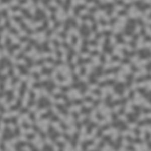
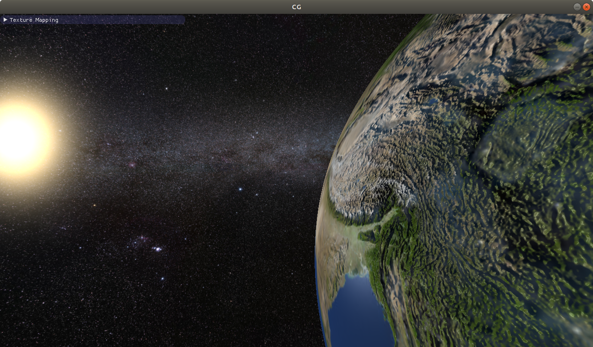
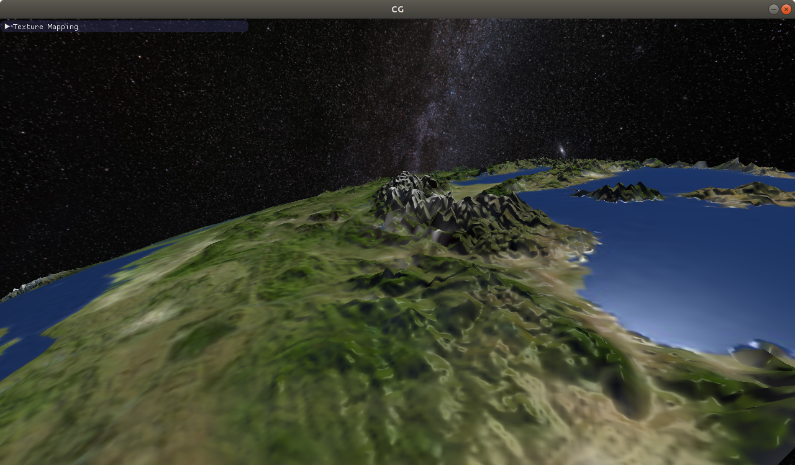

In the context of textures, bilinear interpolation is very important. Your task is to implement bilinear interpolation instead of nearest neighbour interpolation for the setup shown below. Colors are given at the black points; the nearest neighbour interpolation in the left square shows you which colors the points have.
Follow the instructions in the source code and implement the bilinear sampling method Basic1a.sampleBilinear.
Make use of the given helper functions.
Once you are done, the square in the middle should look like the square on the right.
This subtask is about MIP Mapping.
The first aim is to build the MIP map pyramid.
Follow the instructions in the constructor MipMap(texture1D, nLevelMax).
After implementation you should see the coarser two levels of the MIP map pyramid, which are currently black, depicted in color (beneath the surface).
Next, you should use the MIP map pyramid to set the colors of the pixels in the image plane.
Currently we always use the finest level of the pyramid.
You have to adapt the code in Basic1b.Render() accordingly (see TODOs).
The idea is to compute the footprint of a pixel in the texture.
If the footprint is larger than the texel size of a level, you should use a coarser level.
The footprint of a pixel can be computed by the distance of the top and bottom texture coordinate of the pixel (These coordinates are already computed, see comments in the source code!).
You can adjust the number of pixels on the image plane shown below:
In this task, we consider procedural texturing rather than textures from images.
The function snoise you find in the fragment shader shader_noise_adapted.fs returns a grey value for each 2D texture coordinate, resulting
in a noisy but coherent image (see image on the right).
By multiplying the texture coordinates with $b \cdot 2^{f}$ before passing it to snoise, you get noise with different frequencies.
The images below are made using a base frequency of $b=12$ and $f=0, 1, 2, 3$.
The base frequency is stored in baseFreq.
The function fbm takes these and aggregates them to composite noise consisting of more than one frequency.
The images below show aggregate noise (from left to right: only $f=0$, $f=0$ and $f=1$,...).
One can use noise like this as a basis for effects like fire, smoke, water etc.
The two planes below are textured with the noise on the very right.
Now let's move the textured planes: You can either move them manually by pressing the W and S key ore turn on alternating forward and backward motion using the checkerbox. As you will notice, once the planes move farther away from the viewer, minification and therefore aliasing occurs on the procedurally generated noise pattern, and flickering arises.
Your task is to perform a method similar to MIP mapping, but adapted to procedural noise like the one generated here: The idea is to only use lower frequencies when the plane is far away to avoid ugly flickering artifacts during movement. Therefore, you have to compute the derivative of the texture coordinate and deduce the right frequency maximum for the current distance. Note that as a factor, also non-integer values are possible. Especially, you can also have factors below 1, leading to greyish images when the plane is far away (see image on the right, 0.3$\times$base).
Follow the TODOs in shader_noise_adapted.fs to perform this anti-aliasing approach.
The two planes below will always move in a synchronized manner, so that you can directly compare the two versions with (right, shader after your changes) and without
(left, shader before your changes) anti-aliasing.
From last week, you already know the earth and the universe. This week, it is time to add some realistic detail using normal mapping / bump mapping and a cloud overlay.
The normals stored in the normal texture are in tangent space. To use them, they have to be converted to world space with the TBN matrix. The TBN matrix is a 3x3 orthonormal matrix consisting of the tangent (T), bitangent (B), and normal (N) as column vectors. The normal N is already known for every vertex. In Exercise 5, you learned a way of constructing an orthonormal basis from a single unit vector. This does not work here, because there are indefnite possible orthonormal bases and we have to choose the one that was used when creating the normal map. Fortunately, every normal map aligns T and B to the texture coordinates.
The tangent and bitangent for spheres with spherical texture coordinates (as we are using here) are very simple to compute.
In object space, all T's are in the x-z plane (parallel to the equator) and all B's are perpendicular to T and N.
Compute T and B for every vertex in earth.glsl like that:
\[T = (0,1,0)^T \times N \]
\[B = N \times T \]
In the fragment shader, use the interpolated vectors to create the TBN matrix and use it to transform the normal read from the texture to world space.
Hint: Don't forget to normalize each vector.
Once you have implemented this part, you can see the result of normal mapping when you switch to 'Vertex TBN'. It should look like the following image:

As described above, the tangent, bitangent, and normal build an orthonomal basis aligned to the uv coordinates.
When having knowledge about the partial screen space derivatives both of the
world position ($p_x=(p_{x1},p_{x2},p_{x3}),p_y=(p_{y1},p_{y2},p_{y3})$) and of the respective texture coordinates ($c_x=(c_{x1},c_{x2}),c_y=(c_{y1},c_{y2})$),
the tangent and bitangent can also be computed directly:
\[ T = (p_y \times N) c_{x1} + (N \times p_x) c_{y1}\]
\[ B = (p_y \times N) c_{x2} + (N \times p_x) c_{y2}\]
The only problem right now is the computation of the screen space derivatives,
because for example a central difference in x direction would require each fragment to know
the values of the left and right neighbour.
Fortunately, OpenGL provides the built-in functions dFdx and dFdy
that do these derivatives for you.
For example, dFdx takes as input a varying variable from the vertex shader and returns the central difference in x direction.
Use dFdx, dFdy, and the formulas for normal mapping in the fragment shader.
If you have implemented this task correctly, it should look exactly like the per vertex normal mapping of task 8.3 a).
In addition to a normal map, we also added a height map of the earth in earthBump.
You can use this height map to translate every vertex along its normal according to the height sample.
Implement bump mapping in the vertex shader (= tesselation evaluation shader) of earth.glsl.
Use the uniform heightScale to control the shifted distance.
Translate the vertices in objectSpace.
Play around with the 'tesselation factor' in the GUI to change the number of vertices and therefore the detail level of the earth surface. Different to normal mapping, bump mapping also alters the shape of the earth's silhouette:

In this task you are asked to add clouds to our earth.
The clouds are rendered in white with alpha blending enabled.
Read the cloud map in clouds.glsl and set the alpha value appropriately to display smooth clouds.
Make sure no clouds are visible on the night side of the earth
and smoothly blend them in as you did with the day texture.
Next, we want to add fake cloud shadows on the earth.
Sample the cloud map in earth.glsl and diminish the incoming light
on the earth surface according to the cloud map value.
On the night side of the earth this shadowing should not have an effect.
When you are done, the final image should look like this: